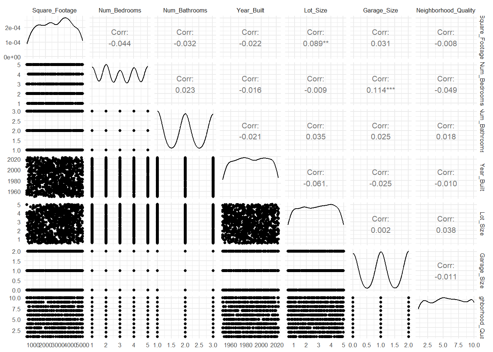
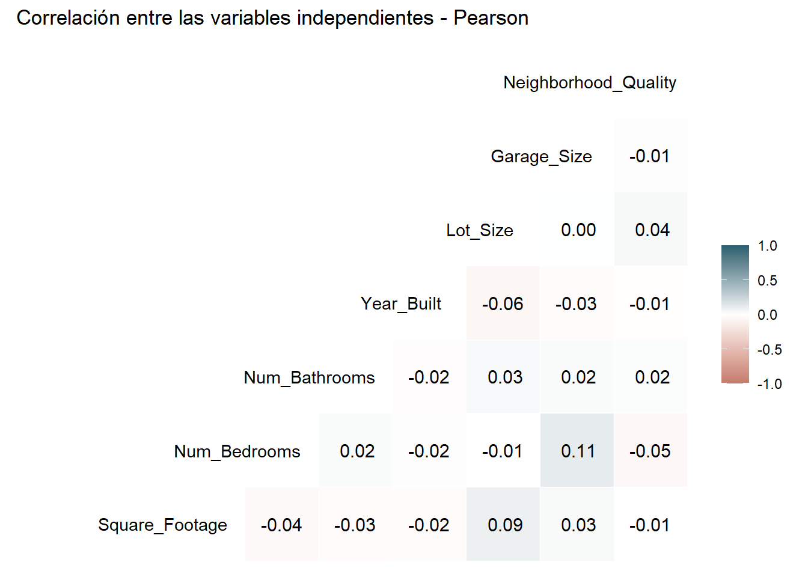

6 Correlación entre variables independientes
Antes de resumir las relaciones entre las variables predictoras, es necesario verificar qué coeficiente de correlación es apropiado y probar formalmente, para cada pareja, si la asociación observada es estadísticamente real o si podría atribuirsele solo al azar de la muestra. Pearson exige variables continuas, relación lineal y, para la prueba de significancia, aproximación a la normalidad; Spearman y Kendall no requieren normalidad y son más adecuados para variables ordinales o relaciones monótonas no lineales.
predictoras <- c("Square_Footage", "Num_Bedrooms", "Num_Bathrooms", "Year_Built",
"Lot_Size", "Garage_Size", "Neighborhood_Quality")6.1 Identificación de la naturaleza de las variables
Conviene revisar cuántos valores distintos toma cada variable predictora, información valiosa teniendo en cuenta qure una prueba de normalidad sobre una variable con tan pocos niveles como lo serían entre 3 o 5, no sería informativa.
## Square_Footage Num_Bedrooms Num_Bathrooms Year_Built Lot_Size
## 894 5 3 73 1000
## Garage_Size Neighborhood_Quality
## 3 10De las 7 variables predictoras, Square_Footage (894 valores), Lot_Size (1.000 valores) y Year_Built (73 valores) tienen suficientes valores para tratarse.
Num_Bathrooms (3 niveles), Num_Bedrooms (5 niveles) y Garage_Size (3 niveles), en cambio, son variables discretas de pocos niveles.
6.2 Normalidad
Ahora se aplica Shapiro-Wilk a las tres variables que se identificaron en el paso anterior como aptas para tratarse.
##
## Shapiro-Wilk normality test
##
## data: df$Square_Footage
## W = 0.96173, p-value = 1.581e-15##
## Shapiro-Wilk normality test
##
## data: df$Year_Built
## W = 0.95645, p-value < 2.2e-16##
## Shapiro-Wilk normality test
##
## data: df$Lot_Size
## W = 0.9544, p-value < 2.2e-16En las tres pruebas, los resultados de los p-valores son menores a 0.05, rechazando la normalidad, hecho consistente con la distribución aproximadamente uniforme (de curtosis con valor redondeado a 1.9) no sesgada ya documentada.
6.3 Inspección conjunta de la linealidad
A pesar de no ser un paso obligatorio, conviene revisar visualmente si alguna pareja de predictoras muestra un patrón, sea lineal o no, que valga la pena explorar con detenimiento.
## plot: [1, 1] [=>-----------------------------------------------------------------------------] 2% est: 0s
## plot: [1, 2] [==>----------------------------------------------------------------------------] 4% est: 4s
## plot: [1, 3] [====>--------------------------------------------------------------------------] 6% est: 5s
## plot: [1, 4] [=====>-------------------------------------------------------------------------] 8% est: 5s
## plot: [1, 5] [=======>-----------------------------------------------------------------------] 10% est: 5s
## plot: [1, 6] [=========>---------------------------------------------------------------------] 12% est: 5s
## plot: [1, 7] [==========>--------------------------------------------------------------------] 14% est: 4s
## plot: [2, 1] [============>------------------------------------------------------------------] 16% est: 4s
## plot: [2, 2] [==============>----------------------------------------------------------------] 18% est: 4s
## plot: [2, 3] [===============>---------------------------------------------------------------] 20% est: 4s
## plot: [2, 4] [=================>-------------------------------------------------------------] 22% est: 4s
## plot: [2, 5] [==================>------------------------------------------------------------] 24% est: 4s
## plot: [2, 6] [====================>----------------------------------------------------------] 27% est: 4s
## plot: [2, 7] [======================>--------------------------------------------------------] 29% est: 4s
## plot: [3, 1] [=======================>-------------------------------------------------------] 31% est: 4s
## plot: [3, 2] [=========================>-----------------------------------------------------] 33% est: 3s
## plot: [3, 3] [==========================>----------------------------------------------------] 35% est: 3s
## plot: [3, 4] [============================>--------------------------------------------------] 37% est: 3s
## plot: [3, 5] [==============================>------------------------------------------------] 39% est: 3s
## plot: [3, 6] [===============================>-----------------------------------------------] 41% est: 3s
## plot: [3, 7] [=================================>---------------------------------------------] 43% est: 3s
## plot: [4, 1] [==================================>--------------------------------------------] 45% est: 3s
## plot: [4, 2] [====================================>------------------------------------------] 47% est: 3s
## plot: [4, 3] [======================================>----------------------------------------] 49% est: 3s
## plot: [4, 4] [=======================================>---------------------------------------] 51% est: 2s
## plot: [4, 5] [=========================================>-------------------------------------] 53% est: 2s
## plot: [4, 6] [===========================================>-----------------------------------] 55% est: 2s
## plot: [4, 7] [============================================>----------------------------------] 57% est: 2s
## plot: [5, 1] [==============================================>--------------------------------] 59% est: 2s
## plot: [5, 2] [===============================================>-------------------------------] 61% est: 2s
## plot: [5, 3] [=================================================>-----------------------------] 63% est: 2s
## plot: [5, 4] [===================================================>---------------------------] 65% est: 2s
## plot: [5, 5] [====================================================>--------------------------] 67% est: 2s
## plot: [5, 6] [======================================================>------------------------] 69% est: 2s
## plot: [5, 7] [=======================================================>-----------------------] 71% est: 1s
## plot: [6, 1] [=========================================================>---------------------] 73% est: 1s
## plot: [6, 2] [===========================================================>-------------------] 76% est: 1s
## plot: [6, 3] [============================================================>------------------] 78% est: 1s
## plot: [6, 4] [==============================================================>----------------] 80% est: 1s
## plot: [6, 5] [===============================================================>---------------] 82% est: 1s
## plot: [6, 6] [=================================================================>-------------] 84% est: 1s
## plot: [6, 7] [===================================================================>-----------] 86% est: 1s
## plot: [7, 1] [====================================================================>----------] 88% est: 1s
## plot: [7, 2] [======================================================================>--------] 90% est: 1s
## plot: [7, 3] [========================================================================>------] 92% est: 0s
## plot: [7, 4] [=========================================================================>-----] 94% est: 0s
## plot: [7, 5] [===========================================================================>---] 96% est: 0s
## plot: [7, 6] [============================================================================>--] 98% est: 0s
## plot: [7, 7] [===============================================================================]100% est: 0s
La matriz de dispersión arroja las 21 combinaciones de pares a la vez y se concluye que ninguna de ellas muestra un patrón discernible. Las nubes de puntos, entonces, son uniformes en todos los paneles.
6.4 Pruebas de hipótesis de correlación entre las 7 predictoras
Incluso si el patrón visual no es evidente, resulta imprudente concluir, sin marcha atrás, que no existe asociación. Por eso, para conservar las buenas prácticas, hay que hacer una prueba formal para cada una de las 21 parejas posibles entre las 7 predictoras. Se calcularán con rcorr() del paquete Hmisc, que entrega en un solo paso la matriz de coeficientes y la de p-valores correspondientes a esas mismas 21 pruebas.
## Square_Footage Num_Bedrooms Num_Bathrooms Year_Built Lot_Size Garage_Size
## Square_Footage 1.000 -0.044 -0.032 -0.022 0.089 0.031
## Num_Bedrooms -0.044 1.000 0.023 -0.016 -0.009 0.114
## Num_Bathrooms -0.032 0.023 1.000 -0.021 0.035 0.025
## Year_Built -0.022 -0.016 -0.021 1.000 -0.061 -0.025
## Lot_Size 0.089 -0.009 0.035 -0.061 1.000 0.002
## Garage_Size 0.031 0.114 0.025 -0.025 0.002 1.000
## Neighborhood_Quality -0.008 -0.049 0.018 -0.010 0.038 -0.011
## Neighborhood_Quality
## Square_Footage -0.008
## Num_Bedrooms -0.049
## Num_Bathrooms 0.018
## Year_Built -0.010
## Lot_Size 0.038
## Garage_Size -0.011
## Neighborhood_Quality 1.000## Square_Footage Num_Bedrooms Num_Bathrooms Year_Built Lot_Size Garage_Size
## Square_Footage NA 0.1687 0.3184 0.4794 0.0046 0.3338
## Num_Bedrooms 0.1687 NA 0.4705 0.6173 0.7676 0.0003
## Num_Bathrooms 0.3184 0.4705 NA 0.5059 0.2699 0.4326
## Year_Built 0.4794 0.6173 0.5059 NA 0.0536 0.4208
## Lot_Size 0.0046 0.7676 0.2699 0.0536 NA 0.9387
## Garage_Size 0.3338 0.0003 0.4326 0.4208 0.9387 NA
## Neighborhood_Quality 0.7918 0.1213 0.5786 0.7630 0.2345 0.7215
## Neighborhood_Quality
## Square_Footage 0.7918
## Num_Bedrooms 0.1213
## Num_Bathrooms 0.5786
## Year_Built 0.7630
## Lot_Size 0.2345
## Garage_Size 0.7215
## Neighborhood_Quality NADe las 21 parejas, Lot_Size–Square_Footage (r = 0.089; p = 0.0046) y Garage_Size–Num_Bedrooms (r = 0.114; p = 0.0003) resultan estadísticamente significativas al 5%; en ambos casos se rechaza H₀, evidenciando una no normalidad, pero las magnitudes son tan pequeñas que carecen de relevancia práctica. Las 19 parejas restantes no muestran evidencia de asociación, por lo que no se rechaza H₀ en ninguna de ellas.
6.5 Magnitud del efecto
Cohen (1988) propone umbrales de referencia para interpretar la magnitud de un coeficiente de correlación, independientemente de su significancia: |r| < 0.10 se considera un efecto trivial, entre 0.10 y 0.29 un efecto pequeño, entre 0.30 y 0.49 moderado, y 0.50 o más, grande.
r_vals <- abs(r_matriz[!is.na(r_matriz)])
clasificacion <- cut(r_vals,
breaks = c(-Inf, 0.0999, 0.3, 0.5, Inf),
labels = c("Trivial (<0.10)", "Pequeño (0.10-0.29)",
"Moderado (0.30-0.49)", "Grande (>=0.50)"))
table(clasificacion)## clasificacion
## Trivial (<0.10) Pequeño (0.10-0.29) Moderado (0.30-0.49) Grande (>=0.50)
## 20 1 0 0De las 21 parejas de predictoras, 20 se clasifican como efecto Trivial según Cohen, y solo Garage_Size–Num_Bedrooms (r = 0.114) terminó encasillada en la categoría de efecto Pequeño. Incluso Lot_Size–Square_Footage, la otra correlación estadísticamente significativa de la sección anterior (r = 0.089), quede clasificada como trivial bajo este criterio, confirmando así, ahora con un criterio de magnitud del efecto respaldandolo, que ninguna de las 21 parejas de predictoras representa una asociación con relevancia en la práctica.
6.6 Comparación Pearson vs. Spearman vs. Kendall
Dado que la normalidad se rechazó para las tres variables evaluadas en el apartado de Normalidad, se verificará si dependiendo del coeficiente elegido la conclusión anterior cambia.
cor_pearson <- cor(df[predictoras], method = "pearson")
cor_spearman <- cor(df[predictoras], method = "spearman")
cor_kendall <- cor(df[predictoras], method = "kendall")
round(cor_pearson, 3)## Square_Footage Num_Bedrooms Num_Bathrooms Year_Built Lot_Size Garage_Size
## Square_Footage 1.000 -0.044 -0.032 -0.022 0.089 0.031
## Num_Bedrooms -0.044 1.000 0.023 -0.016 -0.009 0.114
## Num_Bathrooms -0.032 0.023 1.000 -0.021 0.035 0.025
## Year_Built -0.022 -0.016 -0.021 1.000 -0.061 -0.025
## Lot_Size 0.089 -0.009 0.035 -0.061 1.000 0.002
## Garage_Size 0.031 0.114 0.025 -0.025 0.002 1.000
## Neighborhood_Quality -0.008 -0.049 0.018 -0.010 0.038 -0.011
## Neighborhood_Quality
## Square_Footage -0.008
## Num_Bedrooms -0.049
## Num_Bathrooms 0.018
## Year_Built -0.010
## Lot_Size 0.038
## Garage_Size -0.011
## Neighborhood_Quality 1.000## Square_Footage Num_Bedrooms Num_Bathrooms Year_Built Lot_Size Garage_Size
## Square_Footage 1.000 -0.043 -0.031 -0.022 0.090 0.030
## Num_Bedrooms -0.043 1.000 0.023 -0.015 -0.009 0.114
## Num_Bathrooms -0.031 0.023 1.000 -0.021 0.035 0.025
## Year_Built -0.022 -0.015 -0.021 1.000 -0.061 -0.026
## Lot_Size 0.090 -0.009 0.035 -0.061 1.000 0.003
## Garage_Size 0.030 0.114 0.025 -0.026 0.003 1.000
## Neighborhood_Quality -0.008 -0.049 0.018 -0.010 0.038 -0.011
## Neighborhood_Quality
## Square_Footage -0.008
## Num_Bedrooms -0.049
## Num_Bathrooms 0.018
## Year_Built -0.010
## Lot_Size 0.038
## Garage_Size -0.011
## Neighborhood_Quality 1.000## Square_Footage Num_Bedrooms Num_Bathrooms Year_Built Lot_Size Garage_Size
## Square_Footage 1.000 -0.032 -0.024 -0.014 0.060 0.023
## Num_Bedrooms -0.032 1.000 0.020 -0.011 -0.007 0.097
## Num_Bathrooms -0.024 0.020 1.000 -0.016 0.027 0.022
## Year_Built -0.014 -0.011 -0.016 1.000 -0.041 -0.020
## Lot_Size 0.060 -0.007 0.027 -0.041 1.000 0.003
## Garage_Size 0.023 0.097 0.022 -0.020 0.003 1.000
## Neighborhood_Quality -0.006 -0.038 0.014 -0.007 0.027 -0.009
## Neighborhood_Quality
## Square_Footage -0.006
## Num_Bedrooms -0.038
## Num_Bathrooms 0.014
## Year_Built -0.007
## Lot_Size 0.027
## Garage_Size -0.009
## Neighborhood_Quality 1.000## [1] 0.0008825937Los tres métodos coinciden casi exactamente, con la mayor diferencia entre Pearson y Spearman siendo de apenas 0.001.
6.7 Decisión metodológica de acuerdo a las pruebas
Aunque, en sentido estricto, la falta de normalidad y la presencia de variables discretas de pocos niveles hacen de Spearman o Kendall la elección técnicamente más defendible, la comparación anterior muestra que la elección del método no cambia ninguna conclusión sustantiva. Se reporta el mapa de calor de Pearson por simplicidad de lectura, respaldado por la equivalencia empírica, las pruebas de hipótesis y los criterios de magnitud del efecto ya demostrados.
ggcorr(df[predictoras], label = TRUE, label_round = 2, hjust = 0.85, layout.exp = 2,
low = "#c47b6b", mid = "white", high = "#2c5f6e") +
labs(title = "Correlación entre las variables independientes - Pearson")
La gran mayoría de las casillas están cerca de cero, en tonos tan pálidos que apenas se distinguen del blanco. Las dos correlaciones más altas del conjunto, Num_Bedrooms–Garage_Size (0.11) y Square_Footage–Lot_Size (0.09), son también las únicas dos casillas con un leve tinte verde, aunque siguen estando muy lejos de un tono fuerte. El resto de las 19 parejas se ubica entre −0.06 y 0.04, prácticamente indistinguibles de cero tanto en el número como en el color.
Con un mapa de calor como este, uno ya se hace una idea de qué variables podrían combinarse o transformarse para sacarles más provecho; cuando una casilla se pinta con un color fuerte, hacia el verde oscuro o el rojo, suele ser una señal de que vale la pena construir algo a partir de esas dos variables. Empero, casi todo el mapa quedó en blanco, y las dos casillas menos pálidas siguen representando, según los criterios de Cohen, una magnitud demasiado pequeña para considerarse una asociación real. En otras palabras, no hay ninguna pareja de variables que esté “pidiendo” ser combinada o transformada, ya que las 7 predictoras se comportan, en la práctica, como si fueran independientes entre sí.